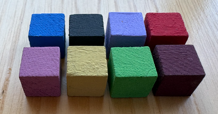
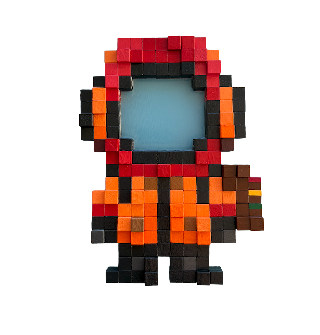
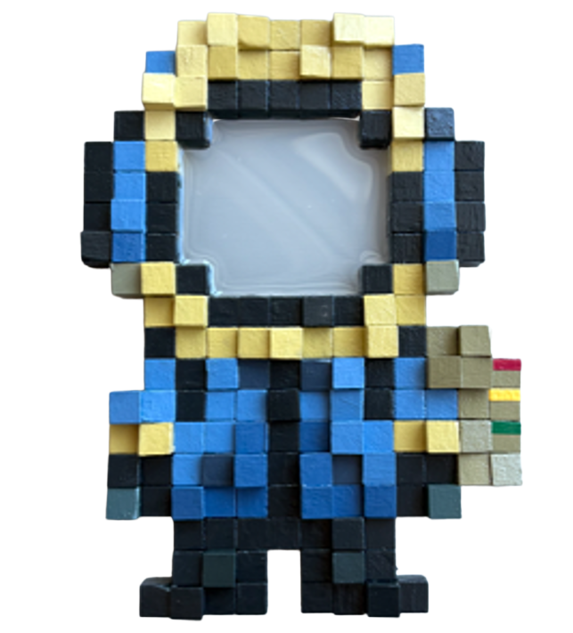
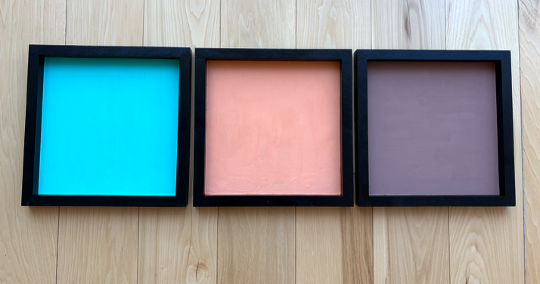

Emotion Cube
A single cube holds a feeling.
One cube is one fragment of someone's emotion— heard from a story, a conversation, a quiet moment shared.
Alone, it seems small.
But every collected feeling begins as a cube.
Every feeling deserves a place.
A curious traveler collecting stories and feelings, one encounter at a time.
Wood Cubes Color Texture Material Pattern
Emotions are signals.
They are not good or bad.


Feely the Traveler is a curious explorer who journeys through the world, listening to people's stories and gathering the feelings within them. Every encounter becomes part of the journey.
Feely doesn't try to change emotions.
Feely listens, recognizes, and carries them.
Emotions are signals — not good or bad.
They simply tell us where we are today.
Today's emotion is today's signal. Tomorrow may be different.
Every feeling tells a story.
Just like a traffic signal, our emotions guide us through life.
Feely is built on a simple belief:
People are never made from one emotion.
We are made from countless stories—
feelings,
experiences,
and moments—
gathered into Emotion Cubes,
grounded by a dominant emotion,
revealed across the complete work,
layer upon layer,
flowing,
changing,
and growing.

A single cube holds a feeling.
One cube is one fragment of someone's emotion— heard from a story, a conversation, a quiet moment shared.
Alone, it seems small.
But every collected feeling begins as a cube.

The Emotion Board carries the dominant emotion.
Its background color sets the emotional ground of the work. The quieter, underlying feelings emerge through Feely— in the cubes, supporting colors, layers, and flow.
Board = the dominant emotion.
Complete work = the full emotional story.
Every cube holds a feeling.
Every board carries the dominant emotion.
The board sets the emotional ground.
The complete work reveals the feelings beneath it.
The glowing signal shows today's emotion—
the feeling Feely is carrying right now.
The color changes,
but Feely remains the same traveler.
Not to hide emotions.
A sound-based storage device
that reads and holds the feelings Feely hears—
protecting the heart while the journey continues.
Listening to stories.
Reading emotion through sound—
feelings that have been spoken,
and feelings still waiting to be heard.
Where collected stories travel.
Emotions gathered along the way.
Small treasures.
Tiny moments.
Nothing is forgotten.
The courage to keep going—
and keep listening.
A place to keep what feelings leave behind.
Connecting carefully with the world,
and with the people in it.
One small step toward the next story.
Every day.
Every design choice in Feely exists for a reason.
Nothing is decorative.
Everything tells a story.
Fully handmade. No two pieces are the same.
Each work has a dominant emotion, expressed through the color of its Emotion Board. But people rarely experience only one feeling.
Across Feely, supporting colors accompany the dominant color. They represent the quieter emotions that exist beneath the surface.
Because emotions are never simple.
Some cubes are raised. Others remain flat.
The second layer is intentionally imperfect and never follows a fixed rule. No two pieces are the same.
These irregular layers represent the imperfect nature of human emotions.
We are never completely balanced.
And that is perfectly human.
The raised cubes aren't placed randomly. If you look carefully, they create a subtle path flowing across the character.
This invisible current represents how emotions move.
Emotions are never meant to stay still.
Every Feely carries a backpack. Inside are collected stories, small moments, and emotions gathered from people met along the journey.
A small battery module sits behind it—marked with three signature stripes:
Red. Yellow. Green.
A quiet tribute to the traffic signal that inspired Feely.
Even as the character evolves,
this detail always remains.
Feely's outfit isn't fixed. The clothing is designed to change color depending on the emotion being carried in that moment.
The traveler stays the same.
Only today's signal changes.
Because the stories change,
but the listener remains.
Stories collected along the way. One feeling at a time.
Color Scientist and Artist.
The traveler behind Feely.